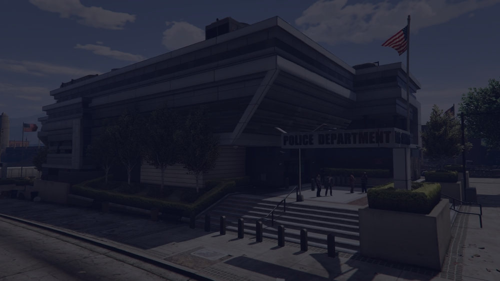

Training Division
Набор, базовая подготовка, оценка навыков и развитие личного состава. Здесь формируется фундамент службы каждого офицера.

Офицальный сайт LSPD на проекте PLUSE GTA5 RP, By Colin.
Los Santos Police Department — это городской департамент правопорядка, где дисциплина, координация, грамотное применение силы и аккуратная работа на сценах так же важны, как скорость реакции. Весь регламент и справочники находятся прямо на сайте.
Вся информация мануала встроена прямо в сайт.
Таблицы кодов адаптированы под веб-формат без поломки верстки.
Разделы раскрываются как полноценная база знаний для LSPD.
Визуальный стиль вдохновлён airforce.com: крупный hero, мощная типографика, layered UI и motion-анимации.
Организационная структура департамента строится вокруг подготовки, полевого патруля, следственной работы и действий в условиях повышенного риска.
Набор, базовая подготовка, оценка навыков и развитие личного состава. Здесь формируется фундамент службы каждого офицера.
Патрулирование улиц, реагирование на вызовы, traffic stop, Terry stop и первичная работа на сценах.
Подразделение повышенного риска для вооружённых преступников, освобождения заложников, штурма и сценариев с критической угрозой жизни.
Следственные мероприятия, анализ улик, сопровождение материалов по инцидентам и работа по сложным делам.
| Ранг | Роль |
|---|---|
| Captain | Руководящий состав |
| Lieutenant | Командование сменой / контроль подразделений |
| Sergeant I | Полевое руководство |
| Detective | Следственная работа |
| Police Officer III+I | Старший офицер |
| Police Officer III | Опытный офицер |
| Police Officer II | Штатный офицер |
| Police Officer I | Начальный офицер |
Ниже весь мануал встроен в сайт по разделам. Никаких внешних ссылок: открываешь блок — и сразу видишь нужные правила, процедуры и стандарты службы.
Основная служебная вертикаль департамента:
A-Alpha, B-Bravo, C-Charlie, D-Delta, E-Echo, F-Foxtrot, G-Golf, H-Hotel, I-India, J-Juliett, K-Kilo, L-Lima, M-Mike, N-November, O-Oscar, P-Papa, Q-Quebec, R-Romeo, S-Sierra, T-Tango, U-Uniform, V-Viktor, W-Whiskey, X-X-ray, Y-Yankee, Z-Zulu.
«У вас есть право хранить молчание. Всё, что вы скажете, может и будет использовано против Вас в суде. Вы имеете право на адвоката. Если Вы не можете позволить себе услуги адвоката, то можете защищать себя сами любыми законными способами. Также вы имеете право на 1 телефонный звонок. Вам ясны ваши права, Сэр/Мэм?»
Иной комплект может быть одобрен супервайзером станции в случае Tactical Alert или для участия в спецоперации. Распределение табельного вооружения осуществляется на усмотрение супервайзера смены в зависимости от ранга сотрудника.
Примеры вызовов: «LSCSD / CODE 100 / 2 красных / огнестрельное ранение», «LSPD / CODE 100 / зелёный / 1 пострадавший / алкогольная интоксикация».
Вынесено в отдельный справочный раздел в удобной веб-структуре.
| Код | Департамент |
|---|---|
| 1 | LSPD |
| 2 | LSCSD |
| 3 | SAPR |
| Позывной | Значение |
|---|---|
| CH — CHARLIE | Cpt / Lt / Srg |
| LN — LINCOLN | Одиночный юнит LSPD |
| DV — DAVID | Группа S.W.A.T |
| AD+ — ADAM PLUS | Объединение 3-х LEO |
| MR — MARY | Мото юнит |
| NV — NOVA | Воздушный юнит |
| TG — TANGO | High speed unit |
| Позывной | Значение |
|---|---|
| KG — KING | Investigator |
| WM — WILLIAM | Detective |
| AD — ADAM | Парный патруль |
| UN — UNION | K-9 юнит |
| MK — MIKE | Водный юнит |
| RG — ROGER | SEB |
| Код | Описание |
|---|---|
| CODE 0 | Офицер в опасности, нужна помощь |
| CODE 1 | Принял вызов |
| CODE 2 | Приоритетный вызов. Звуковые сигналы не используются |
| CODE 3 | Экстренная ситуация. Световые и звуковые сигналы. ДК нарушается |
| CODE 4 | Ситуация под контролем. Помощь не требуется |
| CODE 5 | Ситуация урегулирована |
| CODE 6 | Прибыл на ситуацию |
| Код | Описание |
|---|---|
| CODE 7 | AFK |
| CODE 8 | Сотрудник EMS в опасности |
| CODE 13 | Вызов сотрудника в Discord |
| CODE 40 | Вылет |
| CODE 100 | Требуются медики |
| CODE 200 | Требуется полиция |
| CODE 20 | Нападение на LEO |
| Код | Описание |
|---|---|
| IC1 | Белый / европеоид |
| IC2 | Афроамериканец |
| IC3 | Латиноамериканец |
| IC4 | Представитель среднего Востока |
| IC5 | Азиат |
| IC6 | Неизвестно |
| Буква | Код |
|---|---|
| A | Alpha |
| B | Bravo |
| C | Charlie |
| D | Delta |
| E | Echo |
| F | Foxtrot |
| G | Golf |
| H | Hotel |
| I | India |
| J | Juliett |
| K | Kilo |
| L | Lima |
| M | Mike |
| N | November |
| O | Oscar |
| P | Papa |
| Q | Quebec |
| R | Romeo |
| S | Sierra |
| T | Tango |
| U | Uniform |
| V | Viktor |
| W | Whiskey |
| X | X-ray |
| Y | Yankee |
| Z | Zulu |